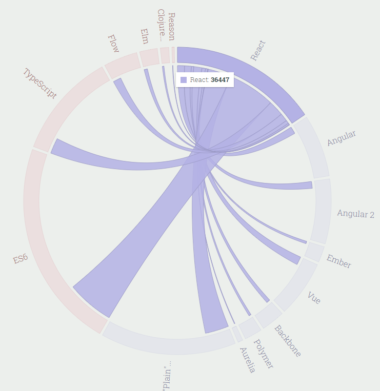
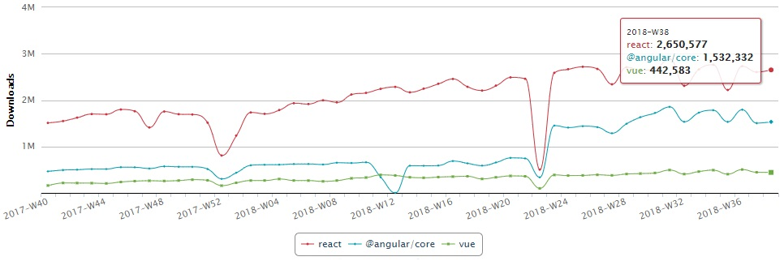

Pick Your Next
Front-End Framework

 |
 |
 |
 |

How far is the moon from the earth?
238,900 miles
What is the area of the Pacific Ocean?
~64 million square miles
https://www.yourbias.is/
sunk cost fallacy
confirmation bias
attribution bias
dunning-kruger effect
I think there is a world market for maybe five computers
Thomas Watson, president of IBM, 1943
There is no reason for any individual to have a computer in his home.
Ken Olsen, DEC founder, 1977

- Uncertainties
- Search out opposing positions
- Range of Perspectives
- Try to rescope problems
6x
Part 2: Criteria
Mei System for Technical Decisions
- Interface
- Familiarity
- Popularity
- Activity
Unpacking Technical Decisions by Sarah Mei
Interface
- ReadMe
- Run the Code
- CLI?
- Build a sample
Activity
- Number/recency of Commits
- Number and Age of Issues
- Comments on issues and pull requests
- Date of Last Release
- Date and completeness for Official Docs
Popularity
- Tutorials & blog posts
- Relative popularity
- Stack Overflow questions
- Opinions
- Books
- Mentions
Familiarity
- How does the framework feel using it?
- Evaluate the code directly
- Evaluate tests
Browser Support
- React - IE9+
- Vue - IE9+
- AngularJS IE9+*
- Angular - IE9+*
- Ember - IE9+
- Polymer 3 - Safari 10+, IE11+
- Backbone - IE6+?
Required Tools?
https://stateofjs.com/2017/connections/
Build Chain?
Dependencies?
https://github.com/angular/angular/network/dependencies
Follows ECMAScript standard?
Server-side rendering?
Mobile story?
PWA and other new browser features?
Modular?
Meets regulations?
Meets Performance SLAs?
Part 3: Statistics
"There are three kinds of lies: lies, damned lies, and statistics."
{kind=link}

https://trends.google.com/trends/explore?cat=5&q=jQuery,Angular,React,Vue
https://trends.google.com/trends/explore?cat=5&q=jQuery,Angular,React,Vue

https://www.npmjs.com/npm/state-of-javascript-frameworks-2017-part-1

https://www.npmjs.com/npm/state-of-javascript-frameworks-2017-part-1
https://www.npmjs.com/npm/state-of-javascript-frameworks-2017-part-1

https://www.npmjs.com/npm/state-of-javascript-frameworks-2017-part-1
https://www.npmjs.com/npm/state-of-javascript-frameworks-2017-part-1
https://www.npmjs.com/npm/state-of-javascript-frameworks-2017-part-1
npm-stat
https://npm-stat.com/
npm-stat
https://npm-stat.com/
npm-stat - Nov 2016 to Oct 2017

https://javascriptreport.com/javascript-frameworks-by-the-numbers-fall-2017/
https://stateofjs.com/2017/
https://stateofjs.com/2017/front-end/results/

https://github.com/collections/front-end-javascript-frameworks
https://risingstars.js.org/2017/en/#section-framework


https://github.com/angular/angular.js/graphs/contributors
https://github.com/angular/angular/graphs/contributors

https://github.com/facebook/react/graphs/contributors

https://github.com/vuejs/vue/graphs/contributors

https://stackoverflow.blog/2018/01/11/brutal-lifecycle-javascript-frameworks/
https://stackoverflow.blog/2018/01/11/brutal-lifecycle-javascript-frameworks/
https://stackoverflow.blog/2018/01/11/brutal-lifecycle-javascript-frameworks/
https://stackoverflow.blog/2018/01/11/brutal-lifecycle-javascript-frameworks/
https://medium.freecodecamp.org/i-just-asked-23-000-developers-what-they-think-of-javascript-heres-what-i-learned-9a06b61998fa
six months ago vs. this week
| Angular | 808 | 1136 |
|---|---|---|
| AngularJS | 1000+ | 1213 |
| jQuery | 947 | 1079 |
| React | 382 | 553 |
| Vue | 24 | 61 |
Part 4: Frameworks

What is Angular
- Angular is a development platform
- ...for building mobile and desktop web applications
- ...using Typescript/JavaScript and other languages.
- (But really TypeScript)
- Built to address issues in AngularJS architecture and changes in modern web application development
Angular
- Supported by Google
- Component-based (vs MV* for AngularJS)
- HTML-like Templates with attributes
- Component-scoped CSS
- Steers away from 2-way data binding
- Focus on using ng CLI (fork from Ember)
- More Opinionated?
Angular
- Bundled "Hello World" app - 217KB
- Great, ambitious extension & tool support
- Your manager has heard of 'Angular'
Hero Sample App - template
<h2>My Heroes</h2>
<ul class="heroes">
<li *ngFor="let hero of heroes"
[class.selected]="hero === selectedHero"
(click)="onSelect(hero)">
<span class="badge">{{hero.id}}</span> {{hero.name}}
</li>
</ul>
<div *ngIf="selectedHero">
<h2>{{ selectedHero.name | uppercase }} Details</h2>
<div><span>id: </span>{{selectedHero.id}}</div>
<div>
<label>name:
<input [(ngModel)]="selectedHero.name" placeholder="name">
</label>
</div>
</div>Hero App - Component (TS)
import { Component, OnInit } from '@angular/core';
import { Hero } from '../hero';
import { HEROES } from '../mock-heroes';
@Component({
selector: 'app-heroes',
templateUrl: './heroes.component.html',
styleUrls: ['./heroes.component.css']
})
export class HeroesComponent implements OnInit {
heroes = HEROES;
selectedHero: Hero;
constructor() { }
ngOnInit() { }
onSelect(hero: Hero): void {
this.selectedHero = hero;
}
}
What is React?
- A JavaScript library for building user interfaces
- Separate libraries for web, mobile, and VR interfaces
- Supported by Facebook
- Component-based design
- Higher developer learning curve?
- Focused on Functional Programming, Immutability, Pure Functions
React
- Generally will use a build process (Webpack, Babel)
- React utilizes a Virtual DOM for performance
- JSX Syntax for templating
- More ECMAScript, less framework-specific syntax
- Tight integration with Redux library
- create-react-app
- Licensing?
import React from 'react';
import Square from './Square';
export default class Board extends React.Component {
handleClick(i) {
const squares = this.state.squares.slice();
squares[i] = this.state.xIsNext ? 'X' : 'O';
this.setState({
squares: squares,
xIsNext: !this.state.xIsNext,
});
}
render() {
const winner = calculateWinner(this.state.squares);
let status;
if (winner) {
status = 'Winner: ' + winner;
} else {
status = 'Next player: ' + (this.state.xIsNext ? 'X' : 'O');
}
return (
{status}
<Square value={this.props.squares[0]}
onClick={() => this.props.onClick(0)}/>
<Square value={this.props.squares[1]}
onClick={() => this.props.onClick(1)}/>
<Square value={this.props.squares[2]}
onClick={() => this.props.onClick(2)}/>
{/* ... */}
);
}
} https://www.npmjs.com/npm/state-of-javascript-frameworks-2017-part-1

What is Vue.js?
- Progressive, incrementally adoptable JS framework for user interfaces
- Core library focused exclusively on view layer
- Single JS file for simplest integration
- Support for modern tooling, bundling, etc.
- HTML-based templates
- Can use JSX as well
- Reactive, composable components with data-binding
A (Very) Simple Vue Application
<html>
<head>
<script src="https://cdn.jsdelivr.net/npm/vue"></script>
</head>
<body>
<div id="app">{{ message }}</div>
<script>
var app = new Vue({
el: '#app',
data: { message: 'Hello Vue!' }
});
</script>
</body>
</html>Comparison To Other Frameworks
- Uses a virtual DOM (like React, unlike Angular)
- Sub component tracking and re-rendering (unlike Angular)
- Very fast (like React, Angular)
- Reactive UI components (like React, Angular)
- One-way data binding (Angular uses two-way)
- Composable components (like React, Angular)
Comparison (2)
- HTML-based templates
- Can use JSX like React if needed or desired
- Component-scoped CSS via <style> tags in single-file components
- Requires a loader (I.e., webpack, HTTP, etc.)
- Can use CSS-in-JS like React if needed or desired
Comparison (3)
- Simplified core, extensions for more complexity (like React)
- Most important extensions are officially supported and developed
- Vue Router for routing and SPA applications (analogous to React Router)
- Vuex for state management (analogous to Redux)
- Weex for native rendering (not as robust as React Native)
Comparison (4)
- Very easy to integrate
- <script src="https://cdn.jsdelivr.net/npm/vue"></script>
- Very small (~30KB gzipped with Vuex and Vue Router)
- Angular about ~130KB gzipped
- Unopinionated (unlike Angular and to some extent React)
- https://vuejs.org/v2/guide/comparison.html
Resources
- Vue.js Guide: https://vuejs.org/v2/guide
- Vue Router Guide: https://router.vuejs.org/en
- HTTP Vue Loader: https://github.com/FranckFreiburger/http-vue-loader
- Vuecasts (Screencasts): http://vuecasts.com
- Bulma (CSS): http://bulma.io
- Bootstrap Vue (CSS/UI): https://bootstrap-vue.js.org
- Element (UI Components): http://element.eleme.io
- Axios (JS HTTP Client): https://github.com/axios/axios
- jsDelivr (CDN): https://www.jsdelivr.com
- Unpkg (CDN): https://unpkg.com
“Unless you are in a job that requires you to use a framework, don’t learn frameworks just for the sake of learning. I am talking about learning how to use a framework. This is a knowledge that will expire fast.”http://searchservervirtualization.techtarget.com/definition/Our-Favorite-Technology-Quotations
https://twitter.com/mislav/status/1022058279000842240
nope.
TBD


Conclusion
- What is your job?
- Manage people's expectations
Illuminate, Nancy Duarte & Patti Sanchez

- Sample app
- Training
- Experts available
- Time to learn
- A build process
- Integration with tools & systems
@SteveAlbers